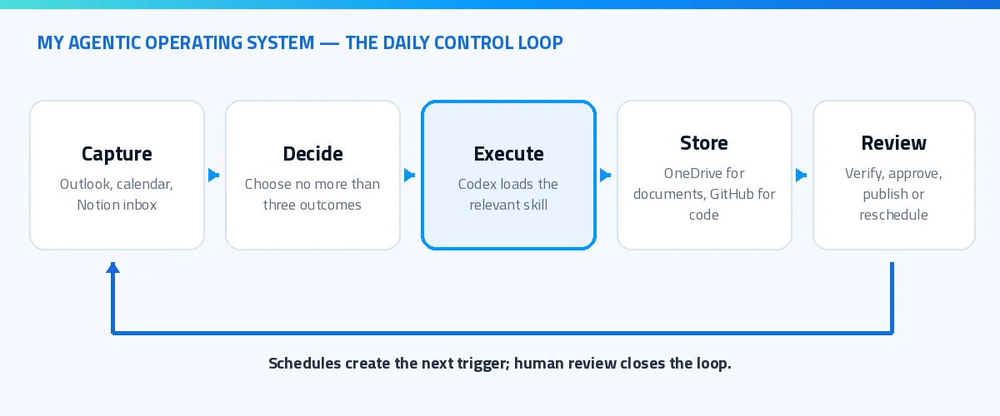
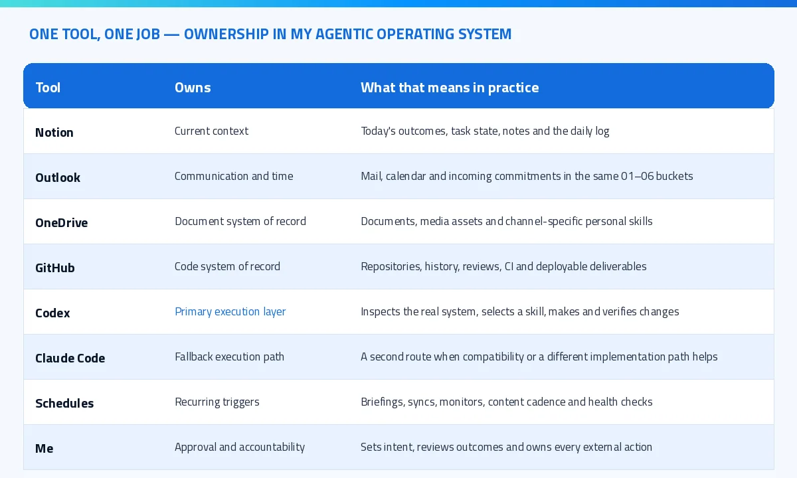

My Agentic OS: How I Run Notion, Outlook, Codex and OneDrive
I do not need another AI chat window. I need an agentic operating system that knows where my work starts, where every result belongs and which actions still require me. That difference sounds small, but it is the reason my daily setup keeps working even as I add more agents, repositories, documents and content channels.
My current system connects Notion, Outlook, Codex, reusable skills, OneDrive, GitHub and scheduled automations. Codex is my primary execution layer. Claude Code gives me a second coding path when its strengths fit the task better or when I need to distribute a long coding day across both subscriptions. Notion gives me the working context for the day. Outlook owns communication and time. OneDrive remains the system of record for documents and media, while GitHub owns code. The tools are not interchangeable, and that is the point.
This post is not a list of apps I like. It is the operating model I use every day: how work enters the system, how I choose what matters, how an agent gets the right instructions, where the output is stored and where I deliberately keep a human approval step.
What do I mean by an agentic operating system?
An agentic operating system is not one application and it is not one giant prompt. It is the combination of routing rules, stable systems of record, reusable procedures and scheduled triggers that let an AI agent do useful work without guessing how my world is organized.
The agent is only one part of the system. The more important parts are the boundaries around it:
- Where does a new task enter?
- Which source contains the current truth?
- Which skill describes the correct workflow?
- Where should the result be stored?
- What can run automatically?
- Which step needs my review before it becomes external?
I learned that the hard way. If all tools can do everything, no tool truly owns anything. Notes end up in repositories, scripts live in document folders, drafts are mistaken for published content and the agent spends more time searching than executing.
My rule is simple: one tool, one primary job. The agent can cross the boundaries, but it must understand them first.

The following table is the shortest useful description of my setup.
| Tool | Primary responsibility | What I deliberately do not use it for |
|---|---|---|
| Notion | Current context, todayâs outcomes, task state, notes and daily logs | Final document storage or source code |
| Outlook | Mail, calendar, commitments and incoming communication | Long-term knowledge management |
| OneDrive | Documents, media assets, personal procedures and channel-specific skills | Git repositories |
| GitHub | Source code, history, reviews, CI and deployable deliverables | Personal documents or loose content assets |
| Codex | Primary execution, inspection, implementation and verification | Owning the only copy of information |
| Claude Code | Alternative coding path with different strengths and additional daily capacity | A second independent filing system |
| Schedules | Recurring triggers, briefings, syncs, monitors and maintenance | Unattended external publishing |
| Me | Intent, priority, approval and accountability | Manually repeating work a safe skill can perform |
This separation makes the setup feel calm. I always know where to look first, and the agent can make the same decision without a long explanation in every prompt.

How does my day actually start?
My Notion Personal Hub is my most-used entry point and the daily command center for the whole system. It gives me one place to understand what matters now before I open individual repositories, mailboxes or document folders. It is intentionally not a wall of every open task. In the morning I choose no more than three outcomes and mark only those items for today. During the day, new thoughts, links and tasks can land in the inbox without forcing me to organize them immediately. In the evening I update the status, save the daily highlight and clear the most important open loops.
The pattern is:
- Morning: choose one to three outcomes.
- During the day: capture first, organize later.
- Execution: hand a concrete outcome to Codex with the relevant workspace in scope.
- Verification: inspect the real result, not just the agentâs summary.
- Evening: update state, record the highlight and leave a clean starting point for tomorrow.
This is where Notion is stronger than a loose collection of documents. It shows the state of work. It does not need to hold every final artifact.
Outlook complements that view. Mail and calendar are not passive archives in my setup. They are an intake layer for commitments: a meeting creates context, a message can create an action and a reply can close a loop. My Outlook folder model mirrors the same numbered structure I use elsewhere, so filing a conversation does not require a new mental map.
Note: I still keep personal messages in the inbox for manual triage. Rules are useful for predictable, high-volume mail, but I do not want an automation to hide a conversation just because it matched a broad condition.
Why do Notion, Outlook and OneDrive use the same structure?
Consistency is more valuable than the theoretically perfect hierarchy. My main routing model is:
_Inbox01 Privat02 Finanzen03 Beruf04 Community05 Business06 System
Notion uses these areas as navigation and context. Outlook uses them to classify communication. OneDrive uses them for the actual document hierarchy. Because the buckets stay stable, I can move from a task to a mail and then to the supporting document without translating between three unrelated systems.
Inside OneDrive I keep the hierarchy shallow and use clear names. New files land in _Inbox and are sorted quickly. Documents follow the pattern YYYY.MM.DD - Source - Title.ext. Community work is organized by channel, and each channel keeps its assets, content and automation close together. Cross-channel brand assets live centrally, while system-level skills belong under 06 System/Skills.
This co-location is important. A WordPress skill should live next to the WordPress channel rules and templates. A LinkedIn skill should understand the LinkedIn format and the same central brand voice. A mailbox skill belongs with the system automation. I do not want one anonymous skills folder that loses the connection to the process it is supposed to represent.
Hint: A folder structure becomes valuable when it answers routing questions. If you still need to open five folders to decide where a file belongs, the hierarchy is describing categories rather than helping you work.
How do Codex and reusable skills execute the work?
Codex is the primary execution layer in my agentic operating system. I use it to inspect repositories, create drafts, update files, verify live systems and coordinate work across tools. But the quality does not come from asking it to âbe smart.â It comes from giving it a repeatable procedure.
That procedure is a skill.
A skill is a folder with a SKILL.md file and, when useful, scripts, references, examples and templates. The agent sees the short description first and loads the detailed workflow only when the task matches. The official Agent Skills specification calls this progressive disclosure. It lets me keep many specialized workflows available without stuffing all instructions into every request.
My public AgentSkills repository contains reusable examples, while personal channel and system skills stay close to the OneDrive workflows they operate. I have skills for WordPress drafts, LinkedIn posts, mailbox organization, content generation and many other repeated tasks.
The important part is that a skill captures more than tone. A useful skill includes the safety gates, file locations, validation commands, naming rules, templates and the definition of âdone.â For example, my blog workflow knows that a new article remains a draft, uses the correct author and brand, creates the expected image set, applies SEO metadata and runs a final audit. Publishing still needs an explicit decision.
This is also why skills are more valuable than a collection of prompt snippets. A prompt gives advice. A good skill gives the agent an executable operating procedure.
If you want the technical structure, I described it in detail in Agent Skills Explained: How to Build Your First Skill. OpenAI also shows the same direction in its official Codex use case for saving repeated workflows as skills.
Why is Claude Code still part of the setup?
Codex is my default execution layer, but Claude Code is deliberately part of the setup because it has strengths of its own. Some repositories or coding tasks fit its workflow and tool surface better. In other cases, I want a genuinely independent implementation path instead of another attempt with the same execution model. It is therefore more than an emergency fallback, even though I do not send every task to both tools.
There is also a practical capacity reason. Both products run within subscription usage limits, and long coding sessions can consume a meaningful part of the available daily capacity. I distribute suitable coding work between Codex and Claude Code instead of exhausting one subscription early and interrupting the rest of the day. The decision is still based on task fit and expected quality first; available capacity helps decide between two good options.
The rule is that both tools must respect the same sources of truth. Switching the execution layer must not create a second document system, a second set of naming conventions or a different brand voice. The selected tool changes how the work is executed, not where the work belongs.
That distinction prevents a common problem: two capable agents slowly building two incompatible versions of the same personal system.
How do I separate documents from repositories?
OneDrive is for documents and assets. GitHub is for code and versioned technical deliverables. On my Mac, repositories follow the local pattern:
/Repo/
âââ <owner-or-organization>/
âââ <repository>/
âââ source code
âââ tests
âââ documentation
âââ CI/CD configurationThis structure matters because I work across personal repositories, company repositories and community projects. Grouping by owner or organization prevents similarly named projects from becoming ambiguous. It also makes the remote ownership visible before I make a commit or push a change.
Repository documentation remains inside the repository, because it must evolve with the code. General documents, media, contracts, blog assets and personal operating procedures remain in OneDrive. When a blog post references a runnable example, the article lives in WordPress and the example lives in GitHub. Each system keeps the artifact it is best equipped to version and review.
Which schedules run without me?
Schedules turn repeated work into an operating layer rather than a memory test. Each active routine has a defined purpose, a known source of truth and an expected output. The goal is not to automate every decision. It is to make sure recurring checks, preparation and synchronization happen consistently before they become urgent.
My configured routines currently cover areas such as:
- a 06:00 morning briefing that brings together the context I need before the day starts;
- a daily Personal Hub sync that keeps my primary entry point aligned with current priorities, notes and task state;
- a weekly deeper Personal Hub review that surfaces stalled work, closes open loops and resets priorities;
- daily website and SEO visibility checks that make indexing, content and discoverability problems visible early;
- forum discussion monitoring that surfaces relevant technical questions and opportunities to contribute;
- GitHub and production health reviews that highlight failing workflows, open engineering signals, runtime issues and release drift;
- mailbox retention maintenance that keeps recurring low-value mail from becoming permanent clutter;
- selected content and contribution workflows that research, prepare and package work before a human publishing decision.
I also keep many additional recurring workflows in a paused state. These cover work that benefits from a repeatable procedure but should not run automatically. When I need one, I trigger it manually and still get the same inputs, safety gates and expected output as a scheduled routine. This gives me an on-demand automation library without turning every repeated task into a permanent background process.
That separation is deliberate. Automation should have an operating state, an owner and an obvious way to stop it. âWe automated it onceâ is not the same as âthis should run forever.â
The schedules also do not remove the human gate. Monitoring, sorting, preparing and drafting are excellent automation targets. Sending, publishing, deleting or making a consequential external change needs a clearer approval boundary.
What is the decision tree I actually use?
When a new piece of work enters the system, I use this decision flow:
- Is it an action or current context? Put it in Notion and decide whether it is one of todayâs outcomes.
- Is it a message, meeting or commitment? Keep the source in Outlook and link or create the necessary action.
- Is the final artifact a document or media file? Store it in the matching OneDrive bucket using the naming standard.
- Is it code or a versioned technical deliverable? Work in
/Repo/<owner>/<repository>and keep the history in GitHub. - Have I done this workflow before? Use or improve the relevant skill instead of rewriting the instructions.
- Does it repeat on a predictable cadence? Add a schedule only after the manual workflow is stable.
- Does it create an external or irreversible effect? Keep a human review or confirmation gate.
That is the real operating system. The individual apps can change. These routing decisions are what keep the setup understandable.
Which pitfalls do I now avoid?
- One giant prompt: It becomes stale, expensive and hard to validate. I split durable procedures into focused skills.
- Using Notion as a file server: Notion holds context and state; OneDrive holds the document of record.
- Putting code in OneDrive: Repositories belong in GitHub with reviews, history and CI.
- Letting every agent invent a structure: Codex and Claude Code follow the same routing and naming rules.
- Automating external actions too early: I automate preparation and verification before I automate publication.
- Creating schedules without ownership: Every recurring run needs a purpose, status and stop path.
- Trusting the summary instead of the system: For important work I verify the actual file, branch, draft state or live result.
- Building a perfect hierarchy before using it: I keep stable top-level buckets and evolve only the useful detail underneath.
My older daily tools overview explains the individual apps. The agentic operating system is the next step: it connects the tools through responsibility, procedure and verification.
How would I build a smaller version today?
Start with one loop, not my full setup.
Choose one inbox, one task view, one document store and one code store. Write down the routing rules in plain language. Then turn one repeated workflow into a skill. Run it manually several times, add validation and only then give it a schedule.
A useful first version can be very small:
Capture -> Choose one outcome -> Execute with one skill
-> Store in the correct system -> Review the real resultThe goal is not maximum automation. The goal is reliable momentum with less repeated coordination. When the system knows where truth lives and the agent knows the procedure, I can focus on the decision that still needs me.
That is what makes the setup feel like an operating system instead of a pile of AI tools.
Stay healthy,
Cheers Jannik